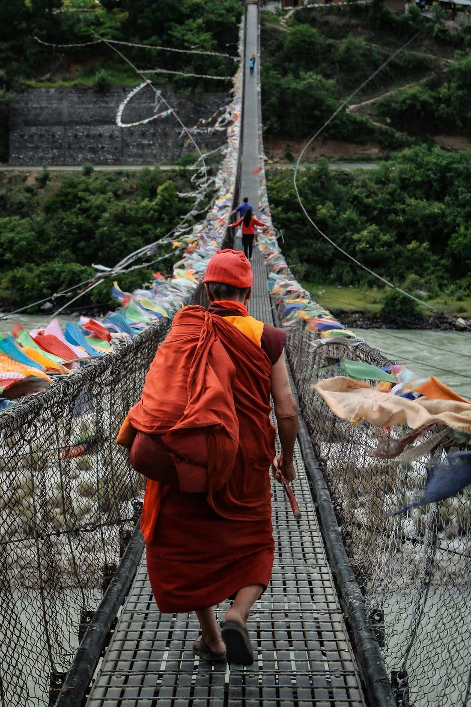
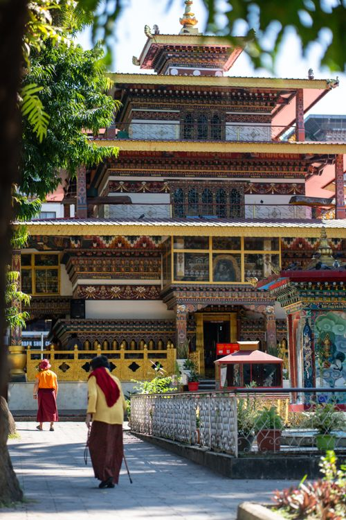

Punakha Dzong
Explore the riverside fortress, a masterpiece of Bhutanese architecture and history.
A warm, fertile valley of rivers, rice fields and one of Bhutan's most beautiful dzongs.
Explore highlights ↓After the high mountain road from Thimphu, Punakha feels lush and generous. Its rivers, terraced fields and subtropical climate create a landscape that invites you to linger.
The valley's spiritual center, Punakha Dzong, is best experienced slowly, with time for the paths and villages around it.
Explore the riverside fortress, a masterpiece of Bhutanese architecture and history.

Cross the long footbridge above the Mo Chhu for beautiful views into the valley.

Hike through rice fields to this hilltop chorten and its wide river views.
Travel over Dochula Pass, arrive in the valley and visit Punakha Dzong at golden hour.
Walk to Khamsum Chorten, cross the suspension bridge and enjoy a riverside local meal.
Add rafting, Chimi Lhakhang or an extra night for a slower valley stay.
Punakha sits at a lower elevation, giving it a warmer, greener climate and a different landscape from Bhutan's high valleys.
Two days covers the dzong, bridge and Khamsum Chorten. Add another night for rafting or a slower rural experience.
Most travelers arrive by road from Thimphu, crossing the scenic Dochula Pass along the way.